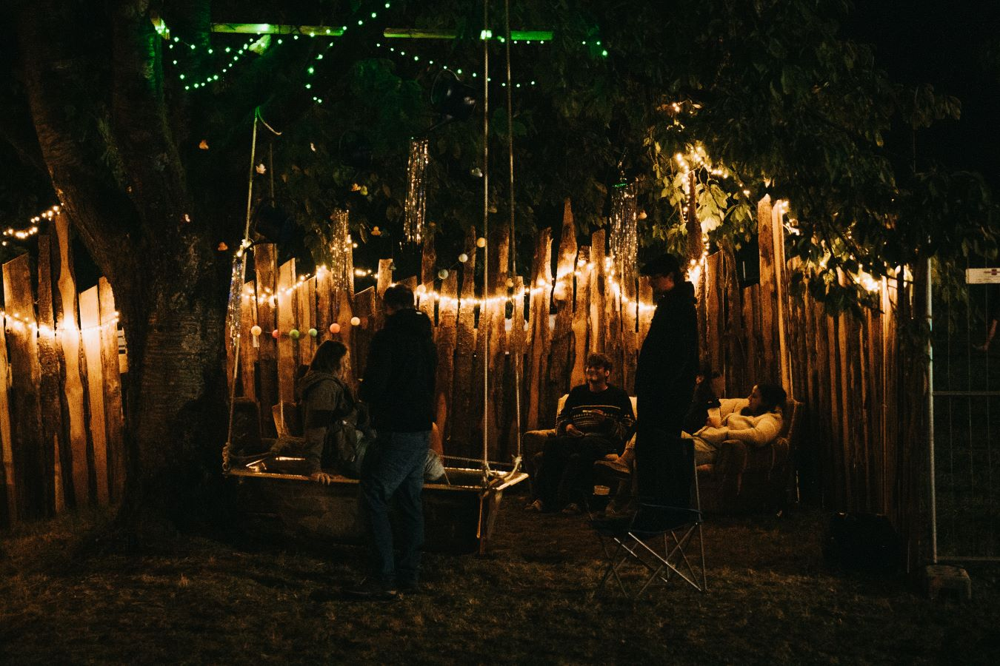

Folgt uns!
Aktuelle News rund ums Festival findet ihr auch auf Instagram: @achdugruene9
RÜCKBLICK 2023
DANKE FÜR DAS TOLLE WOCHENENDE!
Wir schwelgen freudig in Erinnerungen und starten voller Energie mit den Planungen für 2024.
Was für ein Wochenende! Wir sind begeistert von eurer Feierlaune, euren Pogos und Circle Pits, eurem Engagement beim Flunkyball-Turnier.
Danke an alle Bands und DJs für ihre hervorragend präsentierte und zelebrierte Kunst! Danke an alle Helfer*innen am Einlass, an der Bar, am Pizza-Stand, an der Technik und im Hintergrund.
Wir haben dieses Jahr viel gelernt, einiges müssen wir 2024 besser machen, wie zum Beispiel die Musik-Anlage, ein früheres Ende der Bühnen-Musik oder eine Beleuchtung der Toiletten. Wir lernen von Jahr zu Jahr dazu und freuen uns vor allem, wenn ihr auch 2024 mit uns auf dem Ach du grüne Neune! Festival euren Sommer-Abschluss feiert.
LINE-UP
Wir erstellen gerade unser Programm für 2024. Die Genres werden ähnlich wie in 2023 in Richtung Alternative Rock, Indie, Punk und Metalcore gehen.

TICKETS
Tickets gibt es nur im Vorverkauf und nur als Wochenendtickets inkl. Camping.
Es wird keine Abendkasse und keine Tagestickets geben, außer für unsere Gäste aus den umliegenden Dörfern.
Einlass ab 18 Jahren.
INFOS
Einlass
Einlass ab 18 Jahren!
Einlass zum Festivalgelände und zum Campingplatz ist am Freitag, dem 6. September 2024 um 10 Uhr.
Der Campingplatz schließt am Sonntag, dem 8. September 2024 vormittags.
Anreise & Location
Das Festival findet in einem Kirschgarten in der Nähe von 91245 Oberndorf statt. Einen Google-Maps-Link findet
ihr hier: Öffne Google-Maps!
Anreise mit dem Auto
Bitte stellt euer Navi auf folgende Location ein: Parkplatz.Dort befindet sich der Parkplatz, das Festivalgelände ist 3 Minuten zu Fuß entfernt.
Warum Bier für 1,50€?
Wir sind selbst seit Jahren leidenschaftliche Festivalgänger und kennen den Ärger mit mühseligem Dosenbierpaletten-Schleppen und einer unzumutbaren Biertemperatur, wenn den ganzen Tag die Sonne aufs Zelt scheint. Selbstgebastelte Kühlboxen sowie der Nasses-Handtuch-Trick sind uns wohlbekannt, waren für uns aber meist nötig, da die Bierpreise am Bierstand mit 4 bis 6 Euro unzumutbar waren.
Deshalb wollen wir es für euch so bequem wie möglich gestalten: Bei uns gibt es gekühltes Bier für 1,50€ aus der Glasflasche. Ihr spart euch das Schleppen und den Kampf mit einer sonnengewärmten Dose. Und das Beste: Ihr unterstützt auch noch eine lokale Brauerei aus unserer Region.
Camping
Auf dem Gelände gibt es reichlich Platz für Zelte. Autos müssen draußen bleiben, eine Gelegenheit im Camper zu schlafen gibt es leider nicht.
Mitbringen müsst ihr alles, was ihr üblicherweise auf ein Festival mitnehmt: Zelte, Isomatten, Schlafsäcke, Campingstühle, Pavillon, Gaskocher, etc. Lebensmittel in Gläsern wie Pesto, Marmelade usw. sind erlaubt.
Getränke-Schleppen könnt ihr euch sparen, wir bieten gekühltes Bier zum Freundschaftspreis von 1,50€ an. Wir verbieten euch nicht eure eigenen Getränke mitzubringen, allerdings haben wir extra erschwingliche Preise ermöglicht und finanzieren über die Getränke auch einen Teil des Festivals. Support your local Festival!
Für eure Bedürfnisse und Hygiene wird es mobile Toiletten sowie fließendes Wasser geben (kein Trinkwasser!).
Essen & Trinken
Wir haben eine Bar, die von morgens bis nachts für euch geöffnet ist und Getränke zu freundlichen Preisen anbietet:
- Bier: 1,50€
- Shots: 1,50€
- Longdrinks: 4,50€
- Alkoholfreie Getränke: 1,50€
- Kaffee: 1,50€ (nur Samstag- und Sonntagmorgen)
ÜBER UNS
 Ach du grüne Neune! Wir sind eine Gruppe junger Menschen, die Festivals schon
seit Jahren zu ihren Leidenschaften zählt. Wir lieben es, ein Sommer-Wochenende gemeinsam mit Freunden
zu verbringen, neue Freundschaften zu schließen, zu guter Musik abzugehen und eine verrückte Zeit im
Camp zu erleben.
Durch die vielen fantastischen Wochenenden ist ein Traum entstanden: Unser eigenes Festival zu
organisieren!
Einen Raum zu schaffen für rund 200 Gäste, die unsere Leidenschaft teilen, einen Raum für gute Musik, für
Festival-Camping, für Flunkyball am Vormittag, für eine tolle Zeit mit Freunden.
Sei dabei und feier mit uns!
BANDCONTEST 2024
Infos folgen.